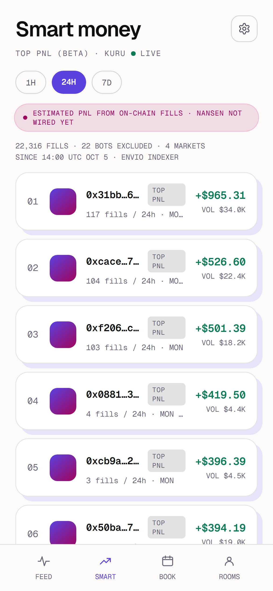
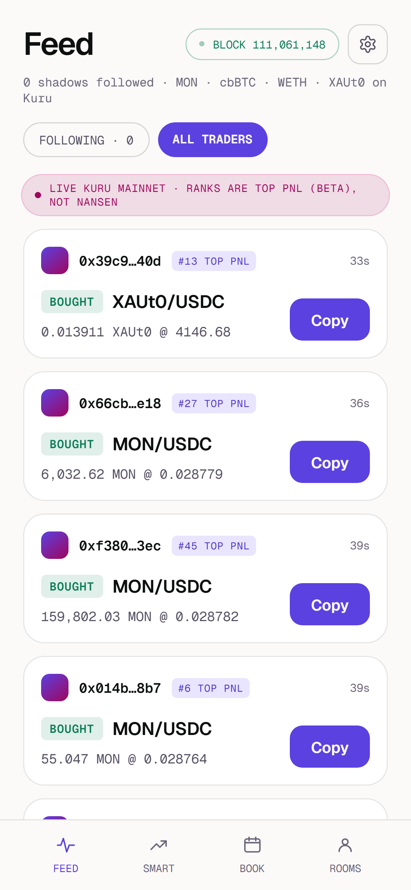

Building in public · Monad Metropolis
影
影
Kage
22
wallets
made 37% of Kuru’s 22,316 fills
in the last 24 hours.
22 bots · 37%
390 wallets · 63%
Kage ranks the
other 390.
Every Kuru trade, indexed by Envio · 4 markets · Monad mainnet


✓ 1H · 24H · 7D rankings, live